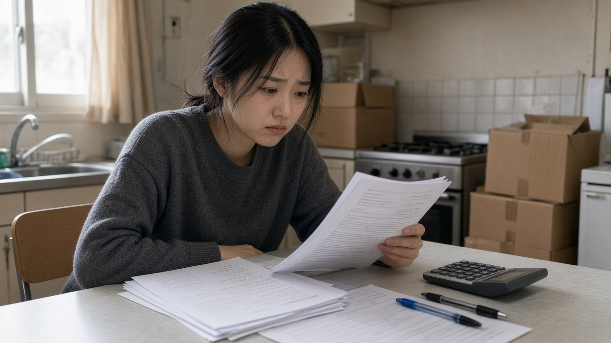
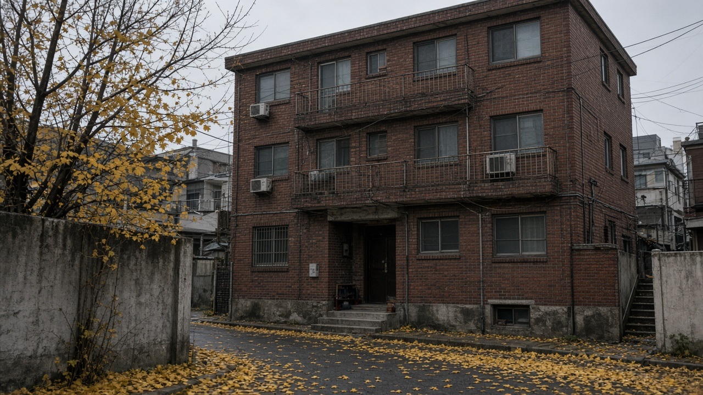
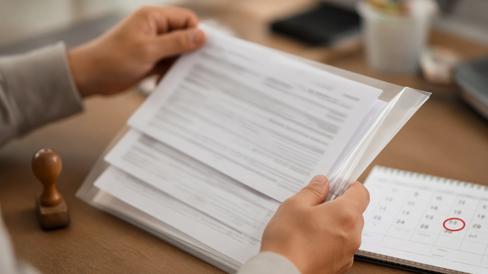

전세사기 피해 보증금 3분의 1 최소보장 11월 13일 시행, 경매 배당이 적어도 받는 차액 계산법과 신청 시점

전세사기 피해자로 결정은 받았는데 경매가 끝나고 손에 쥔 돈이 보증금의 몇 분의 일도 안 되는 분들이 많아요. 집이 신탁에 묶여 있어 경매가 언제 끝날지조차 모르는 분도 있고요. 이런 분들이 꼭 알아 두셔야 할 제도가 11월 13일부터 시작돼요. 국가가 보증금의 3분의 1까지는 회복되도록 부족한 만큼을 채워 주는 최소보장제와, 처분이 끝나기 전에 먼저 돈을 주는 선지급 후정산 제도예요. 국토교통부 발표와 개정된 시행령을 바탕으로 누가 얼마를 언제 받을 수 있는지 정리해 볼게요.
11월 13일부터 보증금 3분의 1까지는 국가가 회복을 보장해요
전세사기특별법이 올해 5월 12일 개정돼 공포됐고, 세부 기준을 담은 시행령이 10월 6일 국무회의를 거쳐 10월 13일 공포됐어요. 둘 다 11월 13일부터 시행돼요.
핵심은 두 가지예요. 첫 번째는 최소보장제예요. 피해주택의 경매나 공매가 끝난 뒤 피해자가 돌려받은 돈이 임차보증금의 3분의 1에 못 미치면, 그 모자란 만큼을 최소지원금으로 지급해요. 두 번째는 선지급 후정산이에요. 신탁사기처럼 권한 없는 사람과 계약한 무권계약 피해자에게는 경매나 공매가 끝나기 전에 먼저 지원금을 주고, 나중에 더 회수되는 돈이 생기면 그걸 반영해 정산해요.
지원금을 계산하고 지급하고 정산하는 일은 한국토지주택공사, 흔히 LH라고 부르는 곳이 맡아요. 대상은 전세사기피해자 결정을 받은 임차인이 중심이고, 외국 국적인 사람은 시행령에서 최소보장 대상에서 빠져 있어요.

최소지원금은 보증금 3분의 1에서 이미 받은 돈을 빼고 계산해요
계산 방식은 생각보다 단순해요. 먼저 보증금의 3분의 1을 최소보장금으로 잡아요. 여기서 이미 회복한 돈을 빼는데, 빼는 항목은 네 가지예요.
경매나 공매에서 대항력이나 우선변제권으로 받은 배당금, 집주인이나 그 집을 산 사람에게서 돌려받은 돈, 공공주택사업자가 피해주택을 사들일 때 생기는 감정가와 낙찰가의 차이인 경매차익, 그리고 그동안 받은 임대료 지원액이에요. 공인중개사 쪽에서 받은 손해배상금처럼 보증금을 사실상 돌려받은 돈도 회수한 금액에 들어가요.
국토교통부가 든 예시를 보면 이해가 쉬워요. 보증금 1억5천만원에 경매 배당 2천만원, 경매차익 1천만원을 받은 경우 지금까지는 3천만원 회복이 끝이었어요. 새 제도에서는 3분의 1인 5천만원에서 이미 받은 3천만원을 뺀 2천만원을 최소지원금으로 더 받아, 모두 5천만원을 회복하게 돼요.
반대로 이미 받은 돈이 보증금의 3분의 1을 넘었다면 최소지원금은 나오지 않아요. 내 사건의 배당표부터 꺼내서 3분의 1과 비교해 보시는 게 첫걸음이에요.
신탁사기 피해자는 경매가 끝나기 전에 먼저 받을 수 있어요
선지급금은 처분 절차가 끝나기 전에 주는 돈이라서 계산이 조금 달라요. 최소보장금에서 보증금 반환채권으로 이미 돌려받은 돈과, 선지급 전까지 받은 임대료 지원액을 빼요. 아직 경매 배당이 없으니 배당금은 빠지는 거예요.
국토교통부 예시로는 보증금 1억5천만원에 임대료 지원액 1천만원만 받은 경우, 지금은 회복액이 1천만원에 그치지만 선지급금 4천만원을 더 받아 모두 5천만원이 돼요.
나중에 경매나 공매에서 돈이 더 들어오면 정산을 해요. 시행령에 따르면 정산 대상 금액이 이미 받은 선지급금보다 많으면 그 차이를 추가로 주고, 같거나 적으면 추가 지급은 없어요. 정산은 정산 대상 금액이 확정된 뒤에 이뤄져요.

신청 시점과 서류, 결정까지 걸리는 기간을 미리 챙기세요
11월 13일이 됐다고 모든 피해자가 그날 바로 신청할 수 있는 건 아니에요. 최소지원금은 피해주택 매입을 요청했다면 경매차익 산정이 끝난 뒤에, 매입을 요청하지 않았다면 피해주택 처분 절차가 끝난 뒤에 신청할 수 있어요. 선지급금은 반대로 LH의 피해주택 매입이나 주택 처분이 끝나기 전까지만 신청할 수 있어요. 이 시점을 놓치면 선지급이 아니라 최소지원금으로 따져야 하니 순서를 잘 보셔야 해요.
신청할 때는 피해자 결정문, 임대차계약서 사본, 주민등록표 초본, 피해주택 등기사항전부증명서, 배당표나 배분계산서, 보증금 반환채권으로 돌려받은 돈에 관한 서류 등을 내야 해요. 병이나 해외 체류로 직접 신청하기 어려우면 대리인을 정할 수 있어요.
LH는 신청을 받은 날부터 90일 안에 지급 여부와 금액을 정해 알려 줘야 하고, 부득이하면 30일 안에서 한 번 늘릴 수 있어요. 결정이나 금액에 동의하기 어렵다면 통지를 받은 날부터 30일 안에 이의신청을 할 수 있어요.
나중에 돈을 더 돌려받으면 반납 신고를 꼭 해야 해요
지원금을 받은 뒤에 보증금을 추가로 회수하는 등 반납할 사유가 생기면, 그 사실을 신고하고 해당 금액을 돌려줘야 해요. 정해진 기간 안에 반납하지 않으면 위반 횟수에 따라 최대 3천만원까지 과태료가 붙을 수 있어요. 집주인 쪽에서 뒤늦게 돈이 들어오거나 소송으로 일부를 받게 됐다면 그냥 넘기지 말고 꼭 신고하세요.
정리하면 세 가지만 기억하시면 돼요. 내가 지금까지 회복한 돈이 보증금의 3분의 1보다 적은지, 내 집의 경매나 처분이 끝났는지 아직 진행 중인지, 그리고 결정 통지를 받은 뒤 30일이라는 이의신청 기한이에요.
오늘 내용은 11월 1일 기준 국토교통부 보도자료와 공포된 시행령을 정리한 일반 정보예요. 개별 사건마다 회수 금액과 절차가 다르니, 실제 지급 대상과 금액은 LH와 관할 기관의 안내로 꼭 확인해 보세요.
참고 자료 국토교통부 2026년 10월 6일 전세사기특별법 시행령 개정안 국무회의 의결 보도자료, 국가법령정보센터 전세사기피해자 지원 및 주거안정에 관한 특별법 시행령 대통령령 제36754호, 파이낸셜뉴스 2026년 10월 6일 보도
태그 전세사기 전세사기피해자 최소보장제 선지급후정산 전세사기특별법 최소지원금 보증금반환 신탁사기 LH전세사기 경매배당